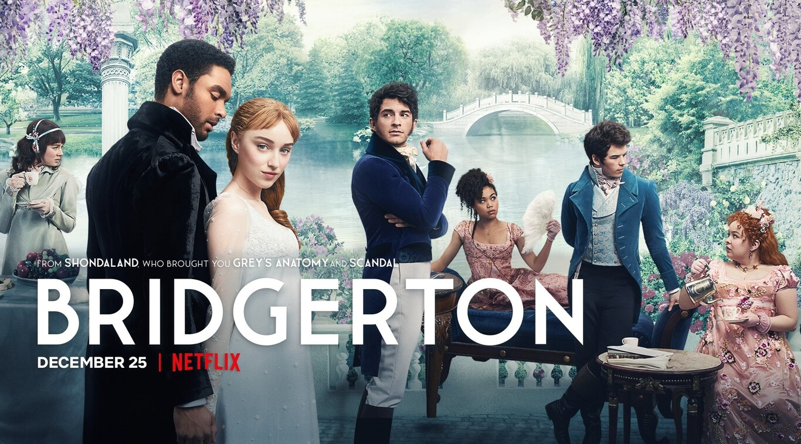

Starring: Adjoa Andoh, Julie Andrews, Lorraine Ashbourne
Created By:Chris Van Dusen
It is based on historical and romantic fiction novels written by Julia Quinn starring the
Bridgerton family: "The Duke and I" (2000), "The Viscount Who Loved Me" (2000), "I Give You My Heart" (
2001), “Seducing Mr. Bridgerton” (2002), “To Sir Phillip, With Love” (2003), “The Heart Of A Bridgerton”
(2004), “For A Kiss” (2005) and “Looking for a Wife” (2006).
The series, mixing drama and romance, is set at the time of the English Regency, which runs from 1811 to
1820 with the reign of George IV after George III, his father, was declared unfit to act as monarch.
It has the concept of a nineteenth-century soap opera with a high-society atmosphere. Sex is common in
his episodes.
The series is set in London high society during the English Regency period of the 19th
century. The story focuses on two families, the Bridgertons and the Featheringtons.1
The Bridgerton family consists of Violet, Dowager Viscountess Bridgerton, her four sons Anthony,
Benedict, Colin, and Gregory, and her four daughters Daphne, Eloise, Francesca, and Hyacinth.
The Featherington family consists of Lady Portia Featherington, her husband Baron Archibald
Featherington and their three daughters, Philippa, Prudence and Penelope, and a distant cousin, Marina
Thompson.2
Each season reflects the story of a Bridgerton brother:3 in the first season the story was based on
Daphne, while the second season corresponds to Anthony.
Throughout the Netflix series The Bridgertons, the typical character of the British is
noted: their acid tone with everything and everyone. There are characters like Lady Danbury (Adjoa
Andoh) in which their way of being favors this tone as they have no qualms about dropping the truths in
a veiled way.
Also, the series is based on the novels by Julia Quinn. The English writer is known for two reasons: the
love theme of her work and for giving her characters a feminist touch. In the series we will see
perfectly how Eloise Bridgerton (Claudia Jessie), despite being educated for motherhood and knowing how
to run a house, prefers to dedicate herself to other tasks and does not care if she finds someone to
marry or not.
Lady Whistledown is one of the most important pieces in the series. Although she is voiced
by Julie Andrews, this veteran actress does not interpret her, it is someone from the city who
masquerades under this name. This mysterious woman has her namesake in the royal history of England.
Under the name of Mrs. Crackenthorpe, the Female Tatler magazine, which was distributed between 1709 and
1710, turned London society upside down by uncovering the infidelities of the time.
The series The Bridgertons of Netflix Season 1 stands out for several reasons. The main one would be the
performances of the actors, among which Phoebe Dynevor and Regé-Jean Page stand out. Something that is
complemented by the wonderful soundtrack by Kris Bowers, in charge of transporting us to the ballroom
dances of the time, and whose strong point is the reinterpretations of current songs on violin, as is
the case with 'Girls Like You' or 'Bad Guy ' in several episodes.
As a negative point to say that the rhythm of the series is unbalanced. After an extraordinary first
four chapters, the following ones decline a bit and until the last one the series does not find the tone
again. Despite this minor blur, The Bridgertons is a light period series that leaves viewers wanting
more.